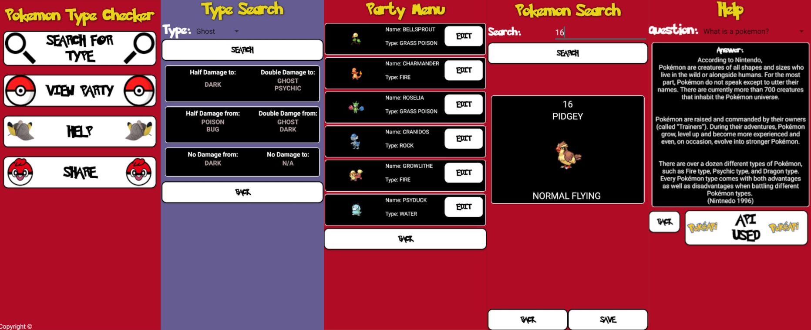

Projects
Automated Mobile Tele-Health App(Android App)
Image
PokeType Checker (Android App)
As part of my Mobile Development unit we were tasked in creating an App that made use of an external API. I chose to use the Poke API. A free to use API that allows users to pull information down about certain pokemon. The app I ended up creating was an app that allowed users to search a pokemon’s type and retrieve the information of what’s effective or not against said type.
Disk Filesystem simulation (c)
For the second assignment for my Operating Systems Unit, We were tasked with researching differentDisk file systems such as NTFS and EXT4, and creating our own using C as the programming language. This can was done by splitting a given file into “blocks” then when asked by the user, retrieving the “blocks” and displaying a whole file to the user.
Linux Account Creation Simulation (Linux Shell)
For the first assignment of my Operating systems Unit, we were tasked with creating a set of bash scripts that simulate creating accounts for new users of a computer system within a business setting with a provided CSV file.
Barry! and the Rise of Hector (Unity Game)
During my time completing my HND, for a unit called **** we needed to create a game in a group. I was in a group with Ross Steventon and Joe Hitch. Together we created Barry! And the rise of Hector. A 3D platformer based on games such as Banjo Kazzoie and Conkers Bad fur day.